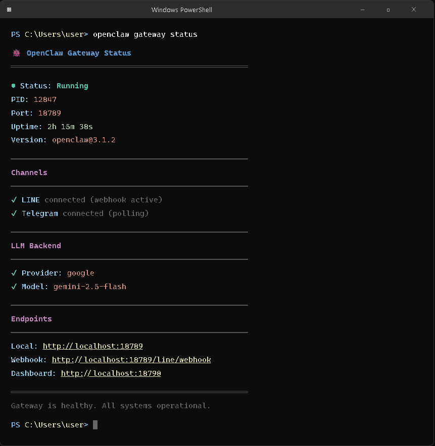
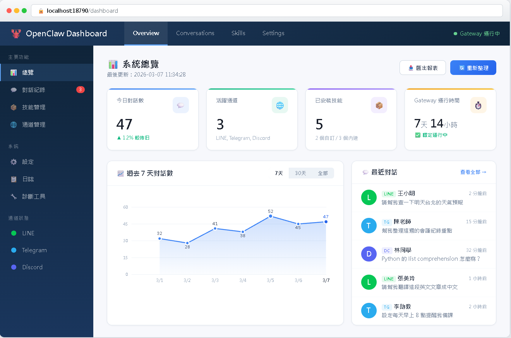
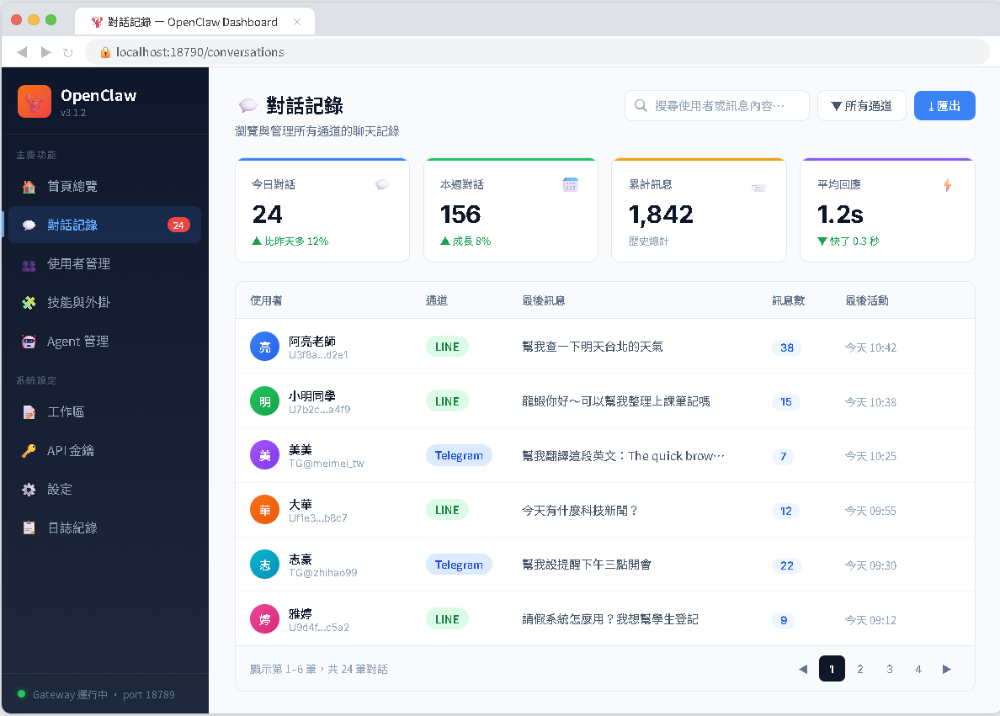
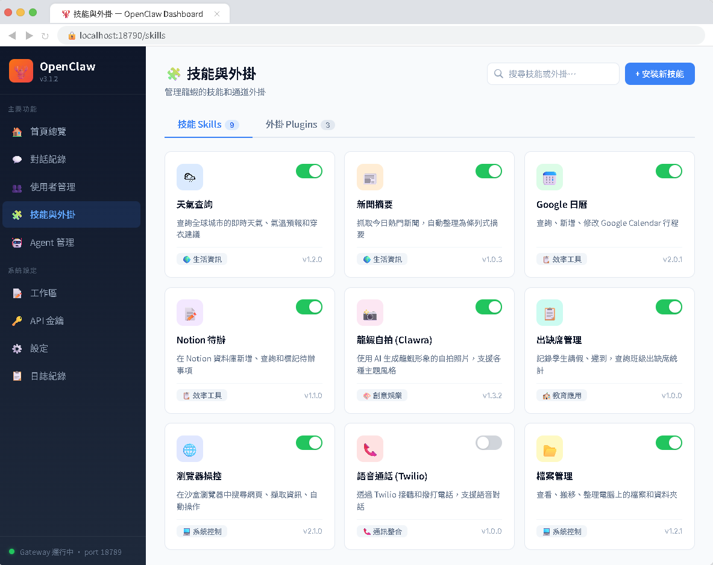
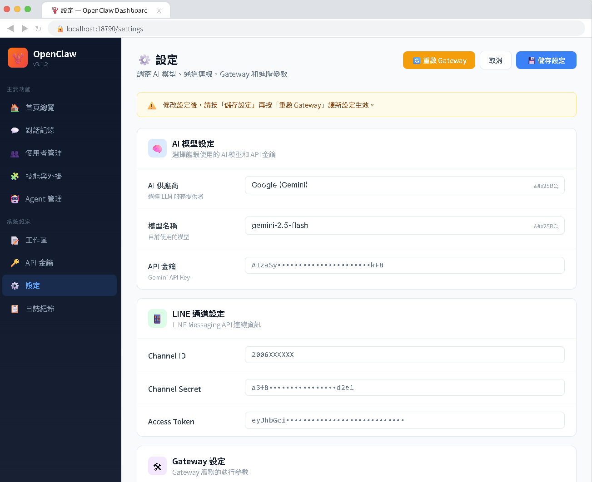

AI Agent 自主代理三王實戰
CH9 | 三種介面，任你操控
走進龍蝦的「後台」——認識三種管理介面，從會跟龍蝦聊天，升級到會管理龍蝦
📋 本章學習目標
- 認識 OpenClaw 的三種操作介面
- 學會使用 TUI 互動介面進行日常操作
- 熟悉 CLI 指令列的常用指令
- 學會用 Dashboard 網頁介面管理對話與設定
- 判斷不同情境下該用哪種介面
9.1 為什麼需要三種後台介面？
LINE 和 Telegram 是你跟龍蝦「聊天」的地方，但有些事情不適合在聊天室裡做。你需要走進「後台」——就像餐廳老闆需要走進廚房一樣。
🖥️ TUI
Terminal User Interface
終端機裡的圖形化互動介面，有選單可以操作，不用背指令
⌨️ CLI
Command Line Interface
指令列工具，直接打指令讓龍蝦做事，功能最完整
🌐 Dashboard
網頁儀表板
用瀏覽器就能管理龍蝦，最直覺的視覺化操作
三種介面比較一覽
| 比較項目 | 🖥️ TUI（終端機介面） | ⌨️ CLI（指令列工具） | 🌐 Dashboard（網頁儀表板） |
|---|---|---|---|
| 開啟方式 | 終端機輸入 openclaw | 終端機輸入指令 | 瀏覽器開啟網頁 |
| 操作方式 | 鍵盤選選單 | 打指令 | 滑鼠點按鈕 |
| 視覺化 | ★★★ 中等 | ★ 純文字 | ★★★★★ 最高 |
| 適合誰 | 想快速操作的人 | 進階用戶 | 喜歡圖形介面的人 |
| 功能完整度 | 常用功能 | 最完整 | 常用功能 |
| 最大優勢 | 選單導引，不用背指令 | 可寫腳本自動化 | 最直覺，視覺化 |
9.2 TUI — 終端機互動介面
TUI 是龍蝦的「半圖形化」終端機介面，用選單和按鈕引導操作，不用記指令。
啟動 TUI
openclaw
就是單獨一個 openclaw，不加任何參數。龍蝦就會進入 TUI 模式：

TUI 主選單功能
🚀 Gateway 管理
啟動、停止、重啟龍蝦，查看運行狀態
⚙️ 設定
AI 模型選擇、API Key、通道設定
🧩 外掛 / 技能
管理外掛和技能的啟用與停用
TUI 常用操作範例
🔄 快速重啟龍蝦
修改了 IDENTITY.md 之後，想讓新人設生效：
- 開啟 TUI：
openclaw - 選「Gateway 管理」→ Enter
- 選「重啟 Gateway」→ Enter
- 等待「Gateway restarted successfully」
🔍 檢查龍蝦狀態
龍蝦在 LINE 上突然不回了：
- 開啟 TUI：
openclaw - 選「Gateway 管理」→ Enter
- 選「查看狀態」→ Enter
running= 活著，stopped= 掛了
👥 幫朋友配對
朋友傳了訊息拿到配對碼：
- 選「配對管理」→ Enter
- 選「新增配對」
- 選擇通道（LINE）
- 輸入朋友的配對碼
9.3 CLI — 指令列工具
CLI 是龍蝦最「硬派」的操作方式。直接在終端機打指令，功能最完整，還可以寫進腳本實現自動化。
指令基本格式
openclaw <子指令> <動作> [參數] # 範例 openclaw gateway start # 啟動 Gateway openclaw doctor # 健康檢查 openclaw skills list # 列出所有技能 openclaw --help # 查看所有子指令

Gateway 管理指令
| 指令 | 功能 | 什麼時候用 |
|---|---|---|
openclaw gateway start | 啟動龍蝦 | 開機後、龍蝦被關掉後 |
openclaw gateway stop | 關閉龍蝦 | 不需要龍蝦時 |
openclaw gateway restart | 重啟龍蝦 | 修改設定後 |
openclaw gateway status | 查看狀態 | 確認龍蝦是否運行中 |
CLI 設定、外掛與技能管理
設定管理
# 查看所有設定 openclaw config list # 修改 AI 模型 openclaw config set ai.model gemini-3-flash # 查看特定設定 openclaw config get ai.model
外掛管理
# 列出已安裝的外掛 openclaw plugins list # 安裝 / 移除 / 啟用 / 停用 openclaw plugins install @anthropic/外掛名稱 openclaw plugins remove @anthropic/外掛名稱 openclaw plugins enable @anthropic/外掛名稱 openclaw plugins disable @anthropic/外掛名稱
技能管理
# 列出 / 安裝 / 移除技能 openclaw skills list openclaw skills install 技能名稱 openclaw skills remove 技能名稱
openclaw config list 可能會顯示你的 API Key。在錄影、直播或截圖時要特別注意！
9.3.7 openclaw doctor — 健康檢查
龍蝦出問題時，第一件事就是跑它！就像人不舒服先量體溫一樣。
openclaw doctor 🩺 OpenClaw Doctor - 健康檢查報告 ━━━━━━━━━━━━━━━━━━━━━━━━━━━━━━ ✅ Node.js 版本: v24.2.0 (需要 >= 22.0.0) ✅ OpenClaw 版本: v3.8.2 (最新版) ✅ 設定檔: ~/.openclaw/openclaw.json 存在（Win: C:\Users\你\.openclaw\） ✅ 工作區: ~/.openclaw/workspace/ 存在 ✅ AI 模型: gemini-3-flash (API Key 已設定) ✅ LINE Channel: 已設定 ✅ Telegram Bot: 已設定 ✅ Gateway: 正在運行 (port 18789) ✅ ngrok: 已連線 ⚠️ LINE Webhook: 未驗證 ━━━━━━━━━━━━━━━━━━━━━━━━━━━━━━ 結果: 9 通過 / 0 失敗 / 1 警告
✅ 通過
沒問題，一切正常
❌ 失敗
有問題，需要修復（會附建議）
⚠️ 警告
可以運行，但建議處理
9.4 Dashboard — 網頁儀表板
用瀏覽器就能操作的網頁介面，長得像一般的網站後台，用滑鼠點就能管理龍蝦。
啟動 Dashboard
openclaw dashboard # 自動開啟瀏覽器 → http://localhost:18790

首頁（Overview）一目瞭然
🟢 運行狀態
Gateway 是否正在運行（綠燈 / 紅燈）
📊 今日統計
收到幾則訊息、回覆了幾則
📡 已連接通道
LINE、Telegram 的連線狀態
💻 系統資訊
版本、Node.js、記憶體使用量
Dashboard 核心功能頁面
💬 對話記錄（Conversations）

- 瀏覽所有對話，按時間排序
- 搜尋對話、篩選通道
- 查看完整脈絡上下文
🧩 技能與外掛（Skills & Plugins）

- 圖形化管理技能和外掛
- 用開關切換啟用/停用
- 直接搜尋和安裝新技能
9.5 什麼情境用哪種介面？

| 我想做的事 | 推薦介面 | 為什麼 |
|---|---|---|
| 啟動 / 關閉龍蝦 | ⌨️ CLI | 一行指令最快 |
| 檢查龍蝦是否正常 | ⌨️ CLI（doctor） | 最完整的診斷資訊 |
| 看龍蝦的聊天記錄 | 🌐 Dashboard | 視覺化最好讀 |
| 修改龍蝦的人設 | 🌐 Dashboard | 內建編輯器最方便 |
| 切換 AI 模型 | 🌐 / ⌨️ 都行 | 怕打錯用 Dashboard |
| 安裝新技能 | ⌨️ CLI | 一行指令搞定 |
| 批次操作 / 自動化 | ⌨️ CLI | 唯一可以寫腳本的介面 |
| 第一次設定龍蝦 | 🖥️ TUI | 精靈引導最友善 |
| 日常監控 | 🌐 Dashboard | 首頁一目瞭然 |
9.7 小結與展望
🖥️ TUI
終端機裡的互動式選單，不用背指令，用方向鍵選就好。啟動只需輸入 openclaw。
⌨️ CLI
指令列工具，功能最完整。gateway start、doctor 是最常用的指令。
🌐 Dashboard
網頁版儀表板，看對話記錄和改設定最方便，用瀏覽器和滑鼠操作。
CLI 指令速查 TOP 5
openclaw gateway start — 啟動龍蝦
openclaw gateway restart — 重啟龍蝦
openclaw gateway status — 查看狀態
openclaw doctor — 健康檢查
openclaw --help — 查看說明
📖 下一章預告：CH10 給龍蝦一個靈魂
龍蝦的「個性」是怎麼來的？IDENTITY.md、SOUL.md、USER.md⋯⋯五個檔案讓你打造一隻完全屬於你的龍蝦！